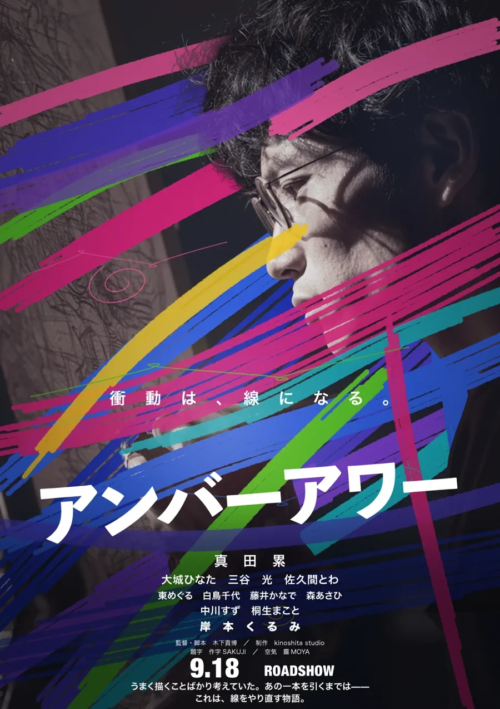
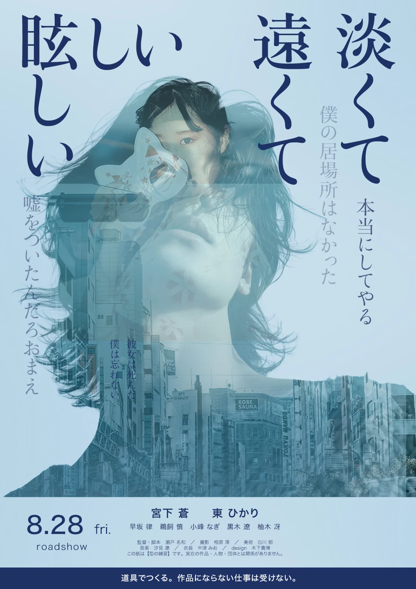
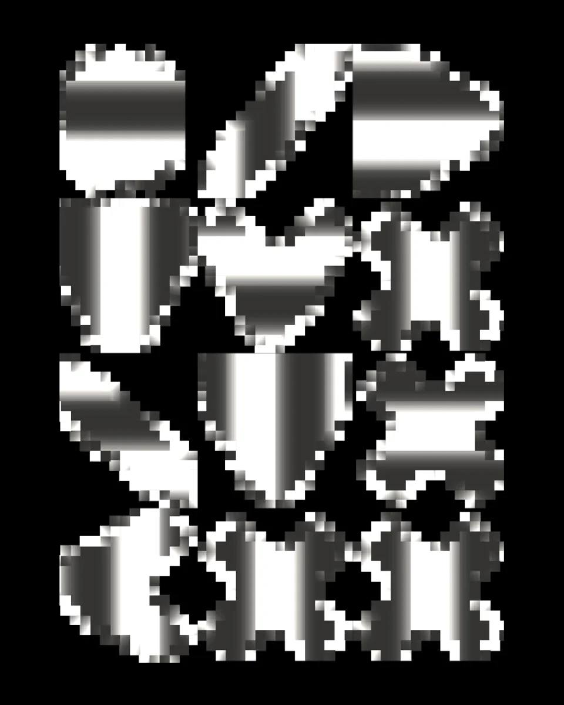
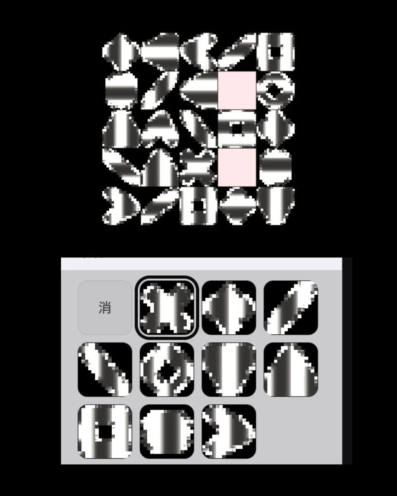
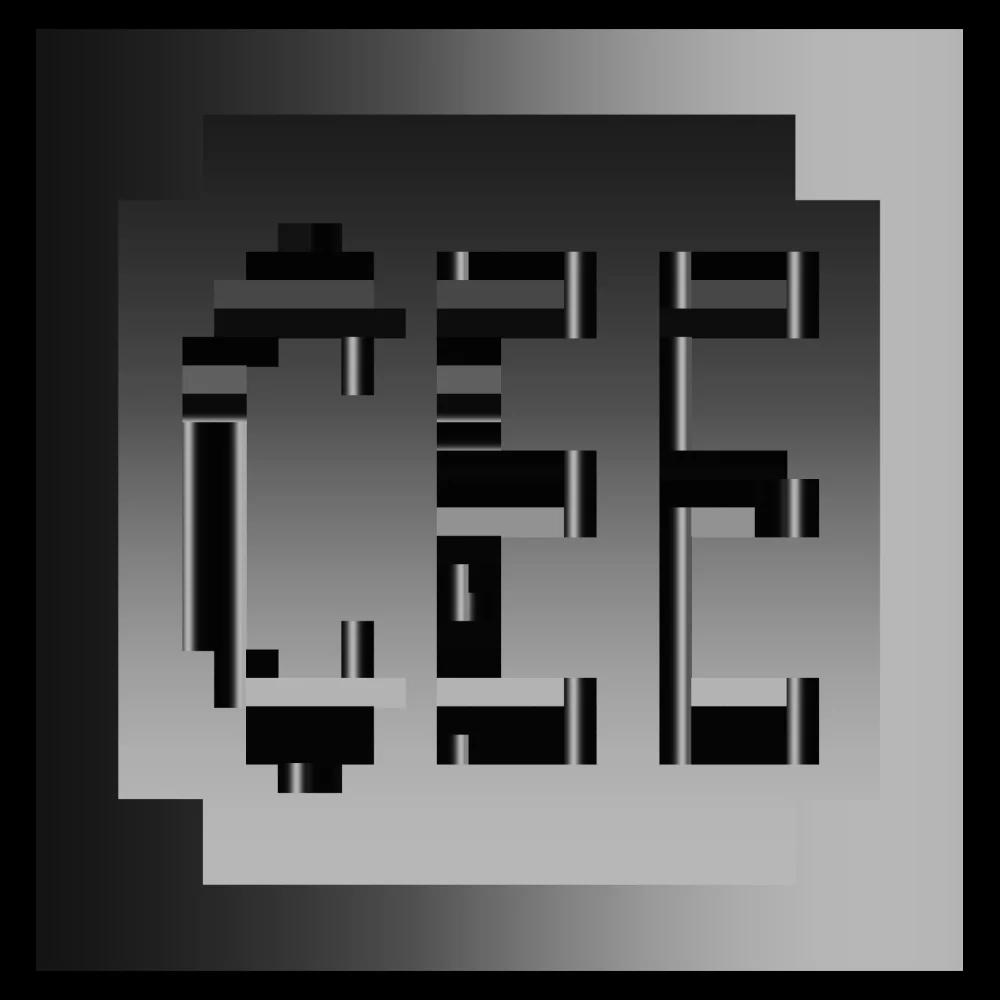
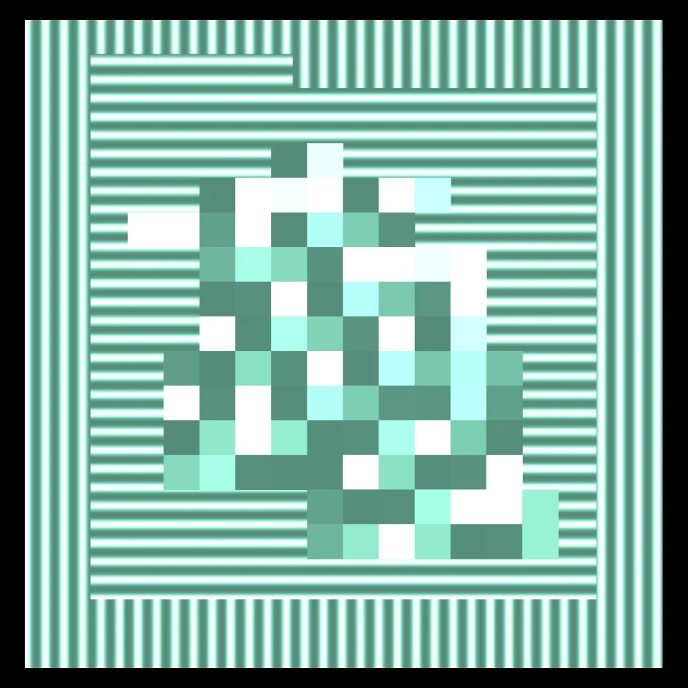
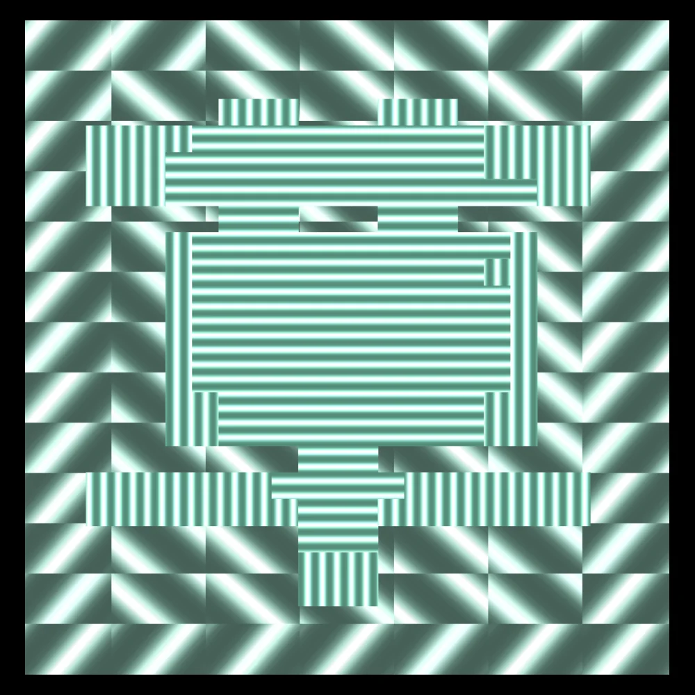
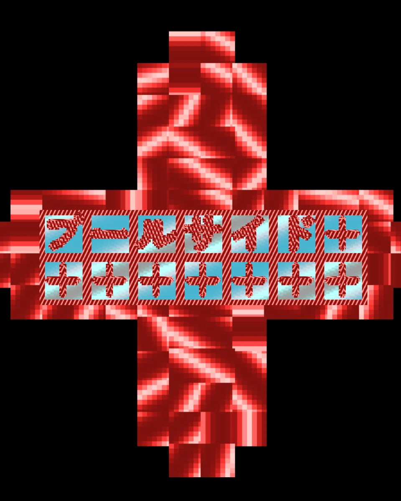
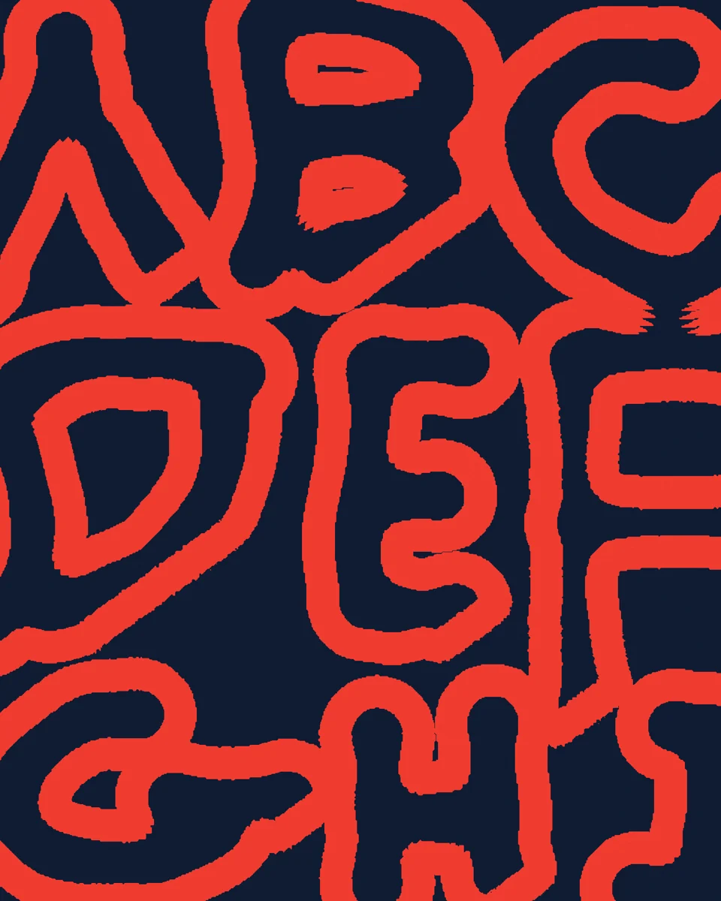

アンバーアワーCINEMA POSTERAD / DESIGN
淡くて遠くて眩しい差し替えCINEMA POSTERAD / DESIGN

彫 — 立つ字MOTION / TYPOGRAPHYDESIGN
 枡 ITYPOGRAPHYDESIGN
枡 ITYPOGRAPHYDESIGN

枡 IITYPOGRAPHYDESIGN
枡 IIITYPOGRAPHYDESIGN 字の光 ITYPOGRAPHYDESIGN
字の光 ITYPOGRAPHYDESIGN

字の光 IITYPOGRAPHYDESIGN
網MOTION / TYPOGRAPHYDESIGN

字の光 IIITYPOGRAPHYDESIGN
字の光 IVTYPOGRAPHYDESIGN
プールサイド ITYPOGRAPHY / GRAPHICDESIGN プールサイド IITYPOGRAPHY / GRAPHICDESIGN
プールサイド IITYPOGRAPHY / GRAPHICDESIGN

滲 ABCTYPOGRAPHYDESIGN
滲 IMOTION / GRAPHICDESIGN
滲 IIMOTION / GRAPHICDESIGN
 滲 IIIGRAPHICDESIGN
滲 IIIGRAPHICDESIGN
幕MOTION / TYPOGRAPHYDESIGN
 朧 IGRAPHICDESIGN
朧 IGRAPHICDESIGN
朧 IIMOTION / GRAPHICDESIGN